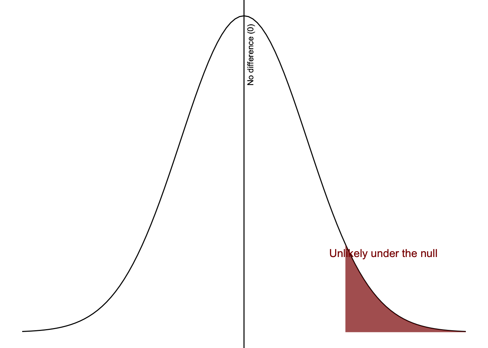

7.3 Step 3: Perform the Test
Now that we understand our data, have clearly stated our hypotheses, and checked assumptions, we are ready to perform the statistical test.
This is where we formally evaluate our hypotheses.
The core question in hypothesis testing is:
How large does a difference need to be before we consider it “real” rather than just due to chance?
In our Bobo doll example, we observed:
- Mean aggression (Aggressive condition) = 11.20
- Mean aggression (Passive condition) = 5.40
That’s a difference of 5.80 aggressive behaviors.
At first glance, that seems meaningful—but we need to ask:
Is this difference large enough that we would not expect it to happen by chance if there were truly no difference between groups?
“Close enough to zero” vs “too far from zero”
If the null hypothesis is true, the true difference between groups is 0. But in real data, we almost never observe an exact difference of 0. So instead, we ask:
- Which differences are close enough to 0 that we treat them as “no difference”?
- Which differences are far enough from 0 that we consider them meaningful?
This creates a boundary between:
- Not surprising (consistent with the null)
- Surprising (unlikely under the null)
Alpha (α): where we draw the line
We define this boundary using alpha (α). Most commonly, we set α = .05, although there might be reasons you change your alpha level (see Chapter 8).
Alpha represents our threshold for what we consider “surprising.”
Values that fall in the most extreme 5% of possible outcomes (assuming the null is true) are considered unlikely enough that we reject the null hypothesis.
We can visualize this idea using a distribution centered at 0 (which represents the null hypothesis of no difference). Most possible differences fall near 0 and are considered not surprising. Values farther away from 0 are more unusual.
Alpha (α = .05) defines the boundary between:
- results that are likely under the null hypothesis
- results that are unlikely under the null hypothesis
The shaded 5% region in the figure represents results that are unlikely if the null hypothesis is true. This boundary corresponds to a **cutoff value**—the point at which a result becomes “surprising enough” that we would reject the null hypothesis. In practice, this cutoff is expressed in terms of the **difference we observe in our data**.
Note
This particular figure only has the shaded region on the right side of the distribution because we had a one-tailed hypothesis. If we had a non-directional, two-tailed hypothesis, the shaded region would be 2.5% of the left tail and 2.5% of the right tail.
If our observed result falls in this region, it is considered unlikely enough that we would reject the null hypothesis.
NoteA quick note on how this used to be done
Before statistical software was widely available, researchers often analyzed data by hand.
They would:
- Determine the critical region based on:
- the alpha level (e.g., .05)
- the sample size
- whether the hypothesis was directional (one-tailed) or non-directional (two-tailed)
- This process produced a cutoff value (called a critical value)
- Then they would compare that cutoff to their observed result
In our example, we observed a mean difference of 5.80 aggressive behaviors.
Researchers would ask:
Does this observed difference fall into the “unlikely” (critical) region?
- If it does → the result is statistically significant (p < .05)
- If it does not → the result is not statistically significant (p ≥ .05)
Today, we no longer need to do this by hand.
Statistical software (like jamovi) calculates the exact p-value, which tells us directly:
How likely our result is under the null hypothesis
This allows us to make more precise decisions without relying on tables or cutoff values.
The p-value: how surprising are our results?
Once we run the statistical test, we obtain a p-value.
The p-value tells us how likely our results would be if the null hypothesis were true.
In our example:
- If the p-value is very small → our observed difference is unlikely under the null
- If the p-value is large → our observed difference is plausible under the null
Warning
A p-value is NOT the probability that the null hypothesis is true.
It is the probability of the observed data (or more extreme data) assuming the null hypothesis is true.
We compare the p-value to our alpha level:
- If p < α → the result is statistically significant
- If p ≥ α → the result is not statistically significant
This comparison is what we will use in Step 4 to make our decision.
Effect size: how big is the effect?
Even if a result is statistically significant, we still need to ask how large is the difference. That’s what effect size tells us.
In our example: How much more aggressive are children in the aggressive condition compared to the passive condition?
In this case, we would get a Cohen’s d effect size, which is the type of effect size used for comparing group differences. There are other effect sizes (e.g., r, eta-squared, phi) that you’ll learn throughout the various inferential statistics.
In our study, given the descriptive statistics from earlier, we would calculate a Cohen’s d of about 1.97. That means the difference between groups is almost two standard deviations, which would typically be considered a large effect.
This suggests that the difference in aggressive behavior between the two groups is substantial.
It is important to note that effect sizes this large are relatively uncommon in many real-world studies. Often, effects are smaller and more subtle, which makes interpreting both statistical and practical significance especially important.
Note
Effect size interpretations (small, medium, large) are only rough guidelines.
What counts as “meaningful” always depends on the context, theory, and application.
We will revisit effect sizes in more detail in Chapter 8.
Statistical significance tells us whether an effect is unlikely to be due to chance.
Practical significance asks: does this effect actually matter in the real world?
In this case:
- A difference of nearly 6 aggressive behaviors is quite large
- The effect size (d ≈ 1.97) indicates strong separation between the groups
This would likely be considered both statistically significant and practically meaningful
Statistical significance tells us if an effect exists.
Effect size tells us how much it matters.
Even a small effect size can be practically important depending on the context.
For example:
- A small improvement in a medical treatment could save lives
- A small increase in graduation rates could affect thousands of students
- A small reduction in harmful behavior could have meaningful long-term impact
Conversely, even a large effect might not be important if:
- it has little real-world consequence
- it is not meaningful in context
Effect size helps us move beyond “Is there an effect?” to “How much does this effect actually matter?”
Power: how likely are we to detect a real effect?
Another important idea is statistical power.
Power is the ability of a test to detect a real effect if one exists.
Power matters because:
- Low power → we may miss real effects
- High power → we are more likely to detect real effects
Power depends on:
- sample size
- effect size
- variability in the data
Note
Directional (one-tailed) hypotheses can increase power, which is one reason they must be theoretically justified.
We will explore power in more detail in Chapter 8 (BEAN).
Now that we have our statistical results, we can interpret what they mean in relation to our research question.
TipCheck Your Understanding
- What is the main question hypothesis testing is trying to answer?
- What does alpha (α) represent?
- What does a p-value represent?
- What is the difference between statistical significance and effect size?
- What is statistical power?
TipAnswers
- Whether the observed results are likely if the null hypothesis is true
- The threshold for what we consider a surprising result
- The likelihood of the observed data (or more extreme data) under the null hypothesis
- Statistical significance tells us if an effect exists; effect size tells us how large it is
- The ability of a test to detect a real effect